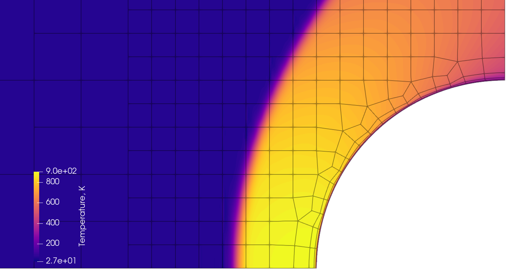

|
hexed 0.3.0
|

|
|
hexed 0.3.0
|
|
Welcome to Hexed, a Discontinuous Galerkin CFD solver with automated, unstructured quad/hex meshing! You are reading the documentation. For source code, see the GitHub repository.

hex (noun)
hex (verb)
Anyone who has spent a substantial amount of time working with computational fluid dynamics (CFD) can attest that it is decidedly arcane and sometimes tends toward evil (in the programming sense of the word). As its name suggests, Hexed scarcely presumes to change that. What it does aim to provide is a more accurate and automated solver, making your workflow faster and less subjective. Specifically, it addresses the following problems with conventional CFD:
Hexed (or perhaps "Vexed", as a certain insightful friend suggested it might be more aptly named) is a combined mesh generator and solver. It couples a highly automated all-hex meshing algorithm for complex 2D and 3D geometry with a highly accurate discontinuous Galerkin solver for the laminar, calorically perfect Navier-Stokes equations. Currently, it only supports execution on a single CPU. Support for turbulent flows, adaptive meshing, and massively parallel execution are planned for future releases.
Hexed is open source under terms specified in the license. This is Version 0, the prototype. You are encouraged to study and experiment with it, but it is missing some important features and probably riddled with bugs, and future versions may include substantial changes to the source code and user interface. We hope to release a stable and more feature-complete Version 1 in the next year or two. As a personal (non-legally-binding) request, if you modify or improve this code, please share your work and credit our original version. If you use Hexed in any academic research, please cite one or both of the following publications:
Ref. [2] : Smith-Pierce, M., Ruffin, S., and Dement, D., "Automated Unstructured Quad/Hex Meshing for High-Order Discontinuous Galerkin CFD," AIAA SCITECH 2024 Forum, 2024. https://doi.org/10.2514/6.2024-0384.
Ref. [1] : Smith-Pierce, M., Dement, D., and Ruffin, S., "A High Order Discontinuous Galerkin Navier-Stokes Solver with Grid-Convergent Artificial Viscosity," AIAA SCITECH 2024 Forum, 2024. https://doi.org/10.2514/6.2024-2176.
This code is developed and maintained by Micaiah Smith-Pierce. I am a PhD student of Professor Stephen Ruffin at the Aerothermodynamics Research and Technology Laboratory (ARTLab), of the Georgia Tech School of Aerospace Engineering. If you have any questions or feedback, you can reach me at micai.nosp@m.ah@g.nosp@m.atech.nosp@m..edu or on GitHub.
Generated on 2024-08-01 for Hexed version 0.3.0, commit 5473ea3d6539573923acfb715e101745288813f8 .